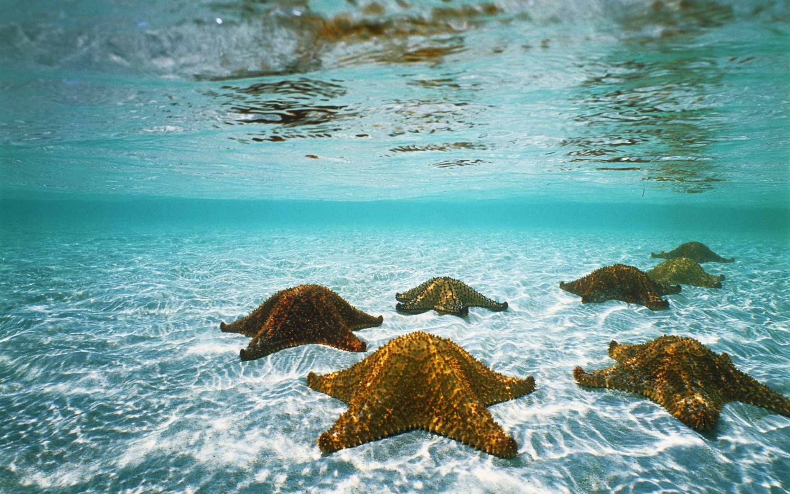
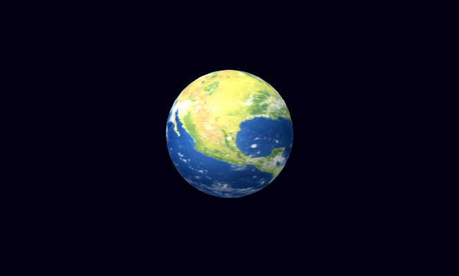
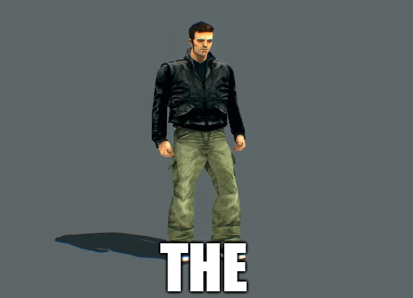
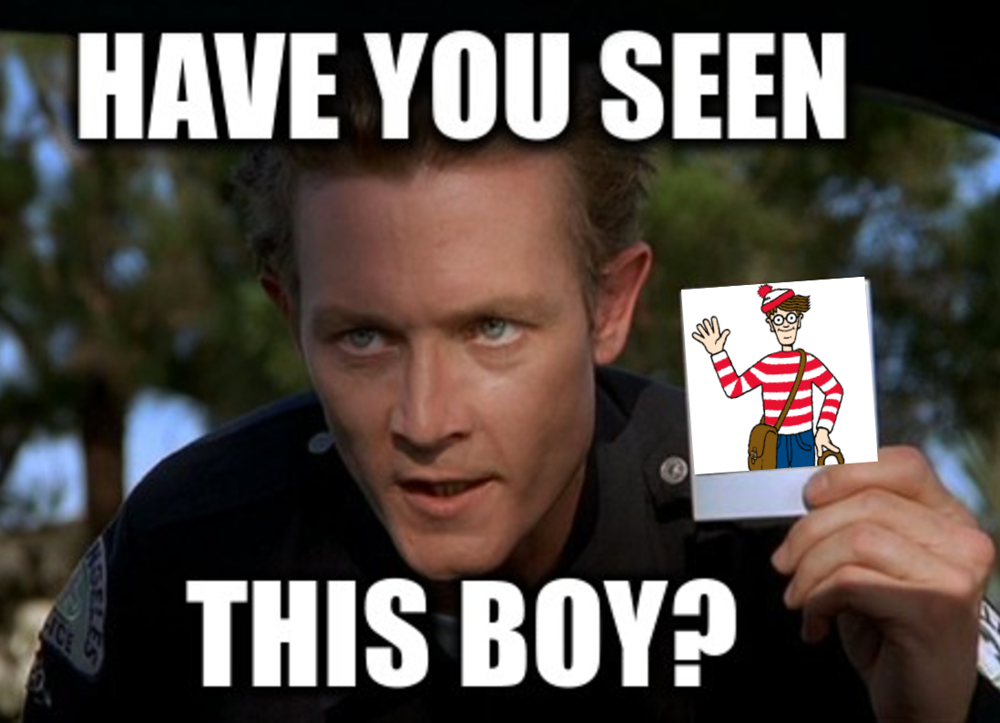
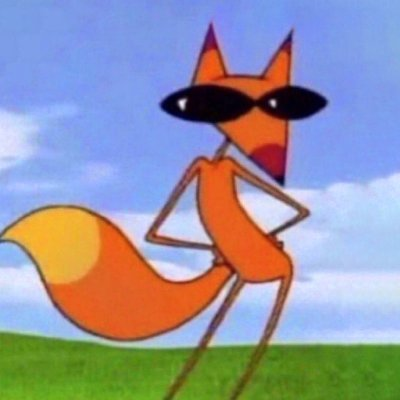
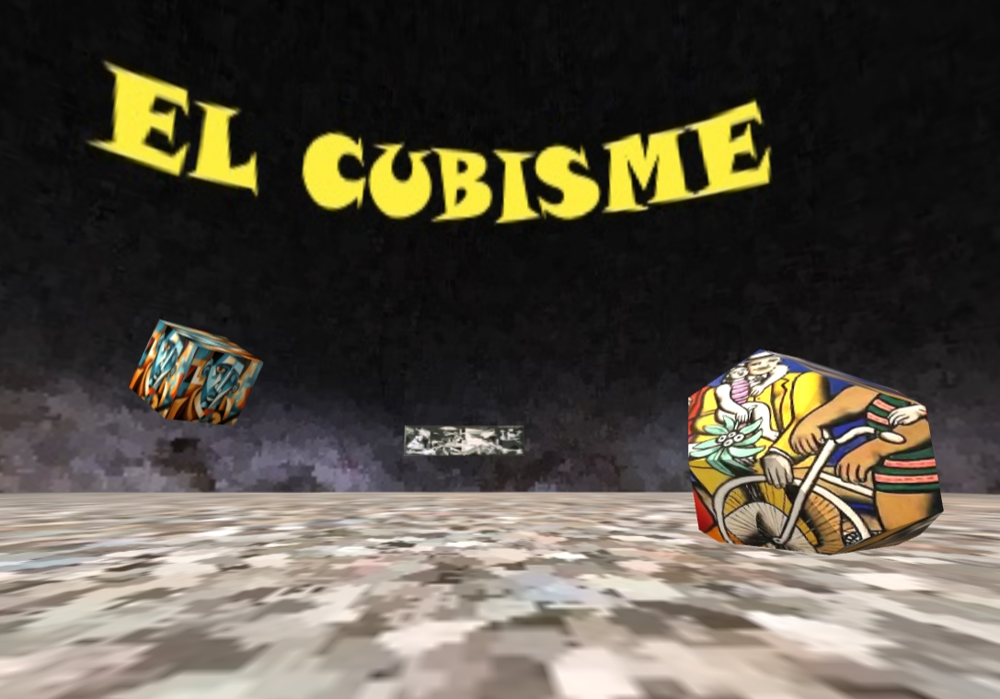
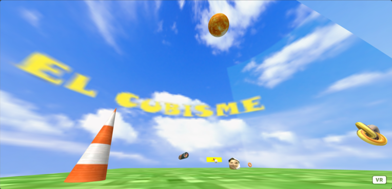
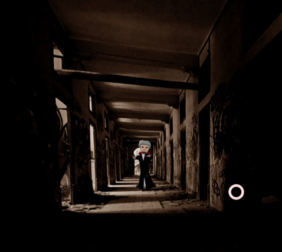
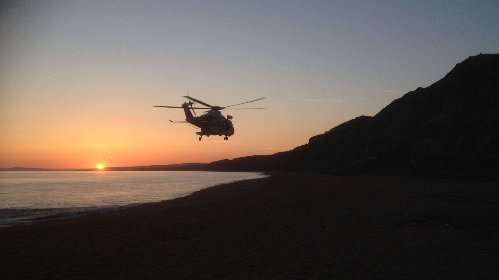
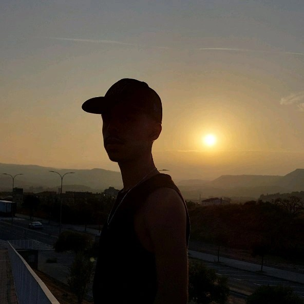

Les llibreries 3D en JavaScript han revolucionat la creació d'entorns virtuals i experiències immersives a la web.
Descarrega el meu Currículum
Exploració d'A-Frame en diferents dispositius.

Aquest exercici és una prova de primer contacte amb la Realitat Augmentada.
Aquest exercici es bàsicament una versió la qual farà que una imatge que haguem triat nosaltres dispari un asset 3D que també hauriem triat nosaltres.

Aquesta és una versió del popular llibre o joc "on és el wally", adaptat a Realitat Augmentada.

Aquest exercici té la finalitat de dur a terme el Reconeixement Facial, conegut en angles com a Face Tracking

Amb el framework A-Frame, hem fet una activitat amb diferents figures, anomenada el cubisme.

Aquí, a partir del que hi ha al exercici anterior del cubisme, cal afegir figures, donar-lis animacions i imatges al nostre gust.

Aquesta llibreria ens permet utilitzar com a fons imatges i vídeos en 360º, fem servir imatges i animem a sobre de la imatge un objecte 3D que se'ns ha donat abans.
Aquest exercici posarà a prova tot el que hem après sobre A-Frame, sumat del que hem après en 360º.

Aquest exercici posarà a prova tot el que hem après sobre A-Frame, sumat del que hem après en 360º.

Estudiant de SMIX amb passió per la tecnologia i la programació.